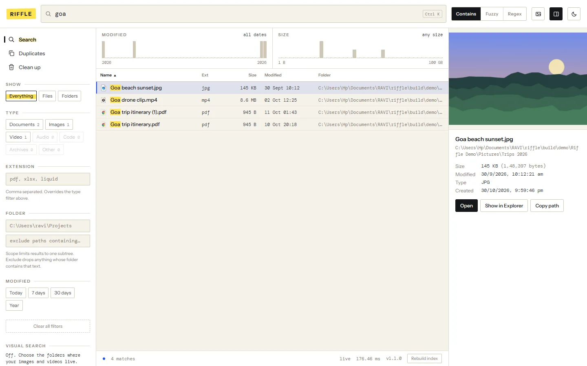
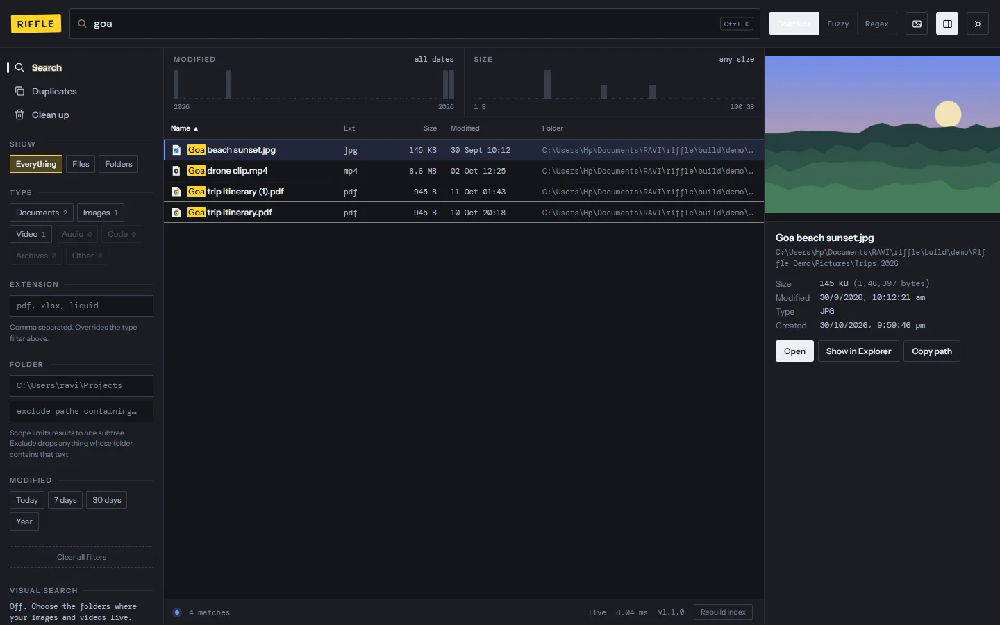
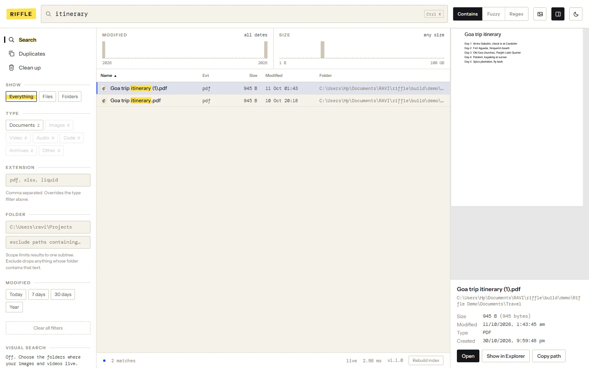
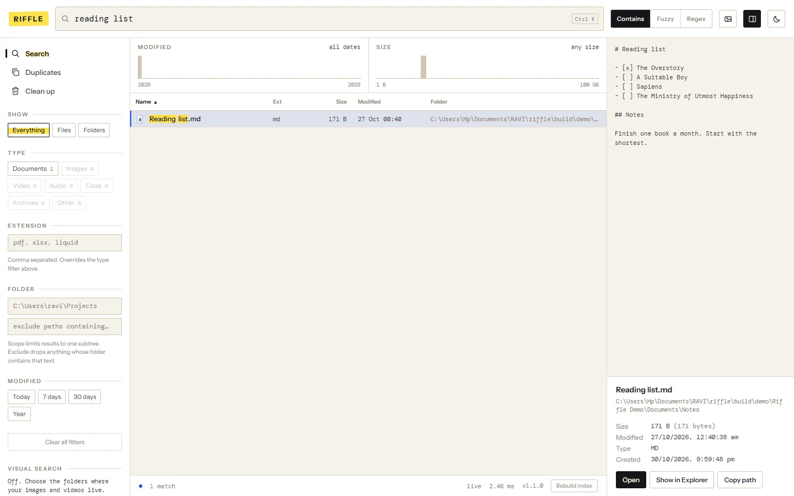
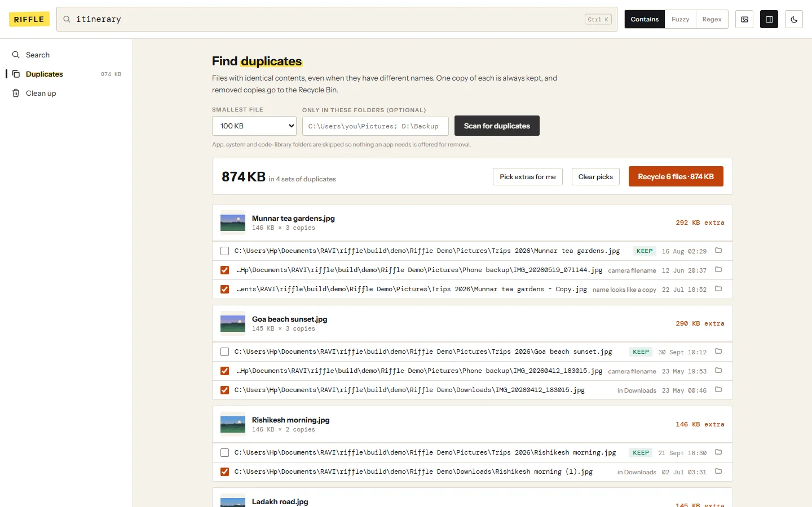
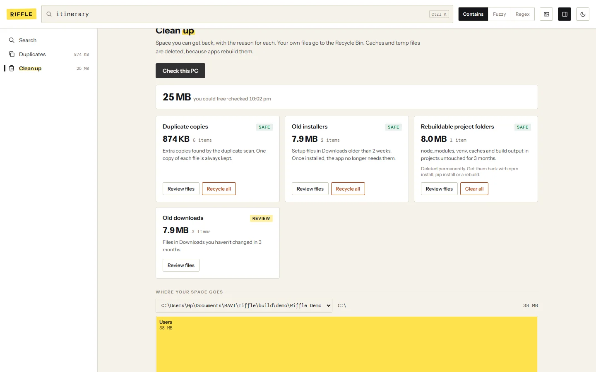

Find any file. Free the space.
Riffle searches every file on your Windows PC as you type, shows what's inside with one key, and tells you which duplicates and leftovers are safe to clear.
Download for Windows Free · Windows 10 and 11 · 20 MB · no admin rights needed

Every file, as you type
Half a million filenames searched in a few milliseconds. Riffle keeps up as files change, so new downloads show up straight away.
- Contains, fuzzy or regex matching
- Filter by type, folder, date or size, or drag across the charts
- Open, show in Explorer, copy the path, all from the keyboard

Look inside with Space
Select a file and press Space. Photos, videos, music, PDFs, text and code open right in the side panel. Office files and anything else Windows can preview show their thumbnail.

Duplicates, found by content
Riffle compares what's inside files, so renamed copies are caught too. It suggests which copy to keep and says why for every other one.
- One copy of every file is always kept
- Removed copies go to the Recycle Bin
- Finds whole folders that are copies of each other

Clean up, with reasons
Temp files, browser caches, old installers, forgotten downloads, big old files and project folders you can rebuild. Each card says why it's safe, and nothing is removed until you choose.
- Your own files go to the Recycle Bin
- Windows and program folders are never touched
- A space map shows which folders take the most room

Stays on your PC
No account, no cloud, no tracking. Riffle never uploads your files or their names, and it works offline.
Small download
Visual search (find the original of a photo) is an optional extra you can add later.
Quiet in the background
One process that waits for Windows to report file changes. Scans only run when you ask.
Windows says "Windows protected your PC". Is it safe?
That message appears for new apps that haven't built a download reputation yet. Click More info, then Run anyway. Riffle's code is public on GitHub, so anyone can check what it does.
Is it free?
Yes, completely.
Can cleaning up break anything?
Riffle never touches Windows, Program Files or app data folders. Your own files go to the Recycle Bin, so you can restore them. Only caches and temp files, which apps rebuild by themselves, are deleted outright, and each card says so before you confirm.
How do I uninstall it?
Settings, then Apps, then Riffle, then Uninstall. It removes the app, its startup entry and its index.